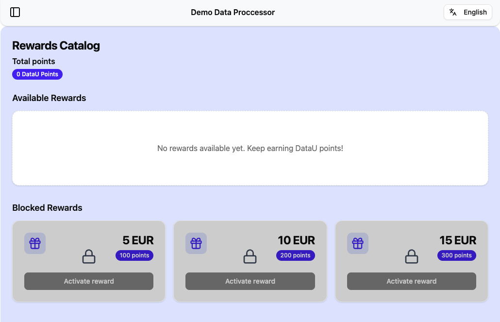
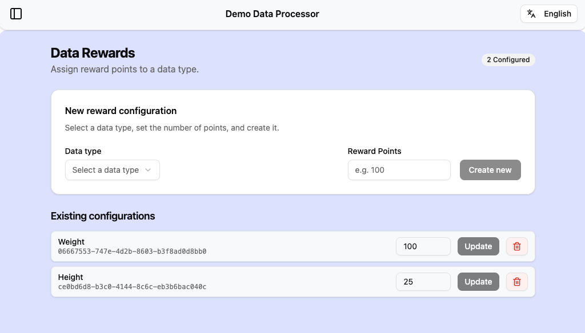

ProxyU Java Client¶
SDK 2.0.0 — latest
You are reading the documentation for ProxyU Java Client 2.0.0, the current release.
Still on an older SDK? See previous versions.
The ProxyU Java Client (SDK) lets your JVM application integrate with the DataU platform: correlate with data subjects, request permission for specific data, and receive that data through callbacks — all over a secure gRPC + mTLS channel to a ProxyU instance.
Requirements
- Java 17
- A ProxyU server endpoint and TLS certificates issued by the DataU CA (contact datau.support@jibecompany.com).
Downloads¶
The current release is 2.0.0.
| Package | File | |
|---|---|---|
| Java Client SDK | proxyu-java-client-SDK-2.0.0.zip |
Download |
| Demo application | proxyu-java-client-dp-demo-app-2.0.0.zip |
Download |
Integrate the SDK as a library¶
Integrate the SDK directly into your own application.
-
Copy the contents of
proxyu-java-client-SDK-2.0.0.zipto~/.m2/repository/com/jibecompany/proxyu-java-client/2.0.0/. -
Add the Maven dependency:
-
Set these properties in your
application.properties: -
Implement the
ProxyUClientStorageinterface — provide your own custom DB implementation. - Implement the
ProxyUClientCallbacksinterface — provide behaviour for handling the received data. -
Import
ProxyUClientConfigurationin your configuration file and define theproxyUClientStorage,proxyUClientCallbacks, andproxyUClientbeans:@Bean ProxyUClientStorage proxyUClientStorage() { return new StorageService(); } @Bean ProxyUClientCallbacks proxyUClientCallbacks() { return new ClientCallbacks(); } @Bean ProxyUClient proxyUClient( ManagedChannel channel, ProxyUClientStorage proxyUClientStorage, ProxyUClientCallbacks proxyUClientCallbacks ) { return new ProxyUClient(channel, proxyUClientStorage, proxyUClientCallbacks); } -
Inject
proxyUClientin your service:
Then use the client to drive the flows — see SDK capabilities. The Demo Application shows all of these integration steps in a working example.
Public API¶
| Type | Purpose |
|---|---|
ProxyUClient |
Entry point — correlation, document submission, permission requests, graph traversal |
ProxyUClientConfiguration |
Spring configuration; builds the mTLS ManagedChannel |
ProxyUClientStorage |
You implement this — persistence for client state |
ProxyUClientCallbacks |
You implement this — inbound public keys, granted status, data |
ProxyUClientUtils |
Static helpers — UUID/ByteString conversion, MIME-type constants, reading files as UserData |
CorrelationMessage, PermissionMessage |
Generated message wrappers |
LegalPolicyDocument |
Terms & Conditions URL + SHA3-256 hash |
DataIdentificationGraph, DataIdentificationGraphNode |
Data Identification Graph model |
UserData |
Data received from a data subject |
ProxyUClient methods¶
| Method | Purpose |
|---|---|
createCorrelationMessage() |
Start the correlation flow; returns the message to encode in a QR code or DashboardU link |
submitDocument(LegalPolicyDocument) |
Register your Terms & Conditions (public URL + SHA3-256 hash) |
createPermissionRequestMessage(...) |
Request consent for a specific data type |
getDataIdentificationGraphRootNodes() |
Fetch the root nodes of the Data Identification Graph |
getDataIdentificationGraphDotRepresentation() |
The whole graph as Graphviz DOT source, for inspecting it by eye |
traverseAndGetAllDataNodes(...) / traverseAndGetAllNodesByType(...) |
Flatten the graph so you can filter nodes by key or MIME type |
SDK capabilities¶
Respect parameter sizes
Make sure you respect the size limits of each parameter when calling the methods below. You can find the size of each parameter in the method's description in the Java documentation.
Correlation¶
Correlation links your application to a data subject's DataU identity.
sequenceDiagram
autonumber
participant FE as Processor Frontend
participant BE as Processor Backend
participant PX as Processor ProxyU server
participant DU as DashboardU
FE->>BE: request for getting correlation message url
BE->>PX: request for creating correlation message
Note over PX: generate correlation message
PX-->>BE: return correlation message
BE-->>FE: correlation message url response
FE->>DU: user clicks button or QR<br/>with correlation message url
Note over DU: consume correlation message
DU-->>BE: subject public key responseGenerating a correlation message¶
Use proxyUClient#createCorrelationMessage to create a correlation message.
To use the correlation message you have two options:
- Option A — Embed it in a QR code that your Data Subject will scan with the DashboardU app.
-
Option B — Embed it in a button that will redirect the Data Subject to DashboardU:
Example
For this correlation message:
1kC0HYOItVV8gUNrdwCjYh1zw47IvQRdAIqZ3ukao0cDESPhhi/r8X5ZthJtFMZFXhYr6BC4qFht0x5evjAnBYT4g/NU1kcLqeOe4tHZXbBy6Yu21qO5EDojVlUQPUnWizw8d9nm3SXrcxb9N9ytdg==
- On STAGE, the link would be:
https://dashboardu.datau-stage.jibe.cloud/#/decode?message=1kC0HYOItVV8gUNrdwCjYh1zw47IvQRdAIqZ3ukao0cDESPhhi%2Fr8X5ZthJtFMZFXhYr6BC4qFht0x5evjAnBYT4g%2FNU1kcLqeOe4tHZXbBy6Yu21qO5EDojVlUQPUnWizw8d9nm3SXrcxb9N9ytdg%3D%3D - On PROD, the link would be:
https://dashboardu.datau.jibe.cloud/#/decode?message=1kC0HYOItVV8gUNrdwCjYh1zw47IvQRdAIqZ3ukao0cDESPhhi%2Fr8X5ZthJtFMZFXhYr6BC4qFht0x5evjAnBYT4g%2FNU1kcLqeOe4tHZXbBy6Yu21qO5EDojVlUQPUnWizw8d9nm3SXrcxb9N9ytdg%3D%3D
The correlation message MUST be URL-encoded.
Upon consuming the link, the correlation message is decoded and the correlation between the Data Processor (you) and the Data Subject will take place and you will receive the result (the id of the user - their public key).
Handling the result¶
- Implement the
onPublicKeyReceivedcallback. Use it to save thepublicKey:correlationMessagemapping for later use when generating permission-request messages, and to link thepublicKeywith a user via thecorrelationMessagereceived both here and inproxyUClient#createCorrelationMessage. - A correlation message is valid 72 hours from the moment it was generated.
Redirecting the user back to your app¶
If you want you can redirect the user back to your app after they did the correlation in DashboardU add the redirect_uri query parameter to send the user back to your application:
Note
The redirect_uri value MUST be URL-encoded. By default, the user is redirected in the same tab; add &target=_blank to open the URI in a new tab.
Document submission¶
Submit a document with your Terms & Conditions for the permission request. The Data Subject will be able to consult this document when giving consent.
Use proxyUClient#submitDocument with a LegalPolicyDocument object containing:
- The URL where the document is stored. This must be a public URL (like a CDN or served by your app).
- The SHA3-256 hash of the document in Hex format.
Example
For the document at
https://repo.maven.apache.org/maven2/springframework/spring-web/1.2.6/maven-metadata.xml, the
SHA3-256 hash in Hex would be
4025edc8feca5c9e7a387b78a4ff4b9860d7723039e4e269d177c384cfdc745d.
Permission¶
Permission requests the subject's consent to access specific data.
sequenceDiagram
autonumber
participant FE as Processor Frontend
participant BE as Processor Backend
participant PX as Processor ProxyU server
participant DU as DashboardU
FE->>BE: request for getting permission message url
BE->>PX: use subject public key in request<br/>for creating permission message
Note over PX: generate permission message
PX-->>BE: return permission message
BE-->>FE: permission message url response
FE->>DU: user clicks button or QR<br/>with permission message url
Note over DU: consume permission message
Note over DU: display permission request details
Note over DU: subject fills in the requested data<br/>and gives consent
DU->>PX: data supply request
PX->>BE: data supply requestGenerating a permission message¶
Use proxyUClient#createPermissionRequestMessage to create a permission message. Its parameters:
| Parameter | How to build it |
|---|---|
| subject | The ID of the Data Subject - public key received in ClientCallbacks#onPublicKeyReceived after the correlation flow is completed. |
| data | The ID of the data type to request from the Data Subject - One of the UUIDs present in the Data Identification Graph. See below. |
| process | Not yet implemented — you can send a random UUID. |
| policy | The SHA3-256 file hash (Hex) of the Terms & Conditions document. |
| reason | Not yet implemented — you can send a random UUID. |
| rewardPoints | Number of points awarded to the Data Subject on granting consent. Set to 0 to skip rewards. |
Getting the Data ID¶
Every data field you can request is registered in the Data Identification Graph, stored on the
blockchain. Each node in the graph has a UUID, and that UUID is the data parameter above.
The graph holds two categories of data type:
| Category | MIME type |
|---|---|
| Simple | text/plain; charset=UTF-8 |
| Simple | text/csv; charset=UTF-8 |
| Simple | image/* |
| Composite | application/datau+node |
How you get the ID depends on whether it is fixed or varies per request:
If every permission request asks for the same data, inspect the graph once and use the UUID directly.
Call proxyUClient#getDataIdentificationGraphDotRepresentation to get the graph as
DOT source, then render it in any Graphviz viewer —
for example GraphvizOnline or
Edotor.
Pick the ID you need and pass it to the permission message:
If the data ID varies, read the graph through the API instead.
-
Fetch the root nodes, then flatten them so you can filter:
List<Proxyu.DataIDGraphNode> roots = proxyUClient.getDataIdentificationGraphRootNodes(); // every data node in the graph Map<String, Proxyu.DataIDGraphNode> all = proxyUClient.traverseAndGetAllDataNodes(roots); // only the nodes of one MIME type Map<String, Proxyu.DataIDGraphNode> simple = proxyUClient.traverseAndGetAllNodesByType(roots, "text/plain; charset=UTF-8"); -
Filter on
Proxyu.DataIDGraphNode#getKeyorProxyu.DataIDGraphNode#getMimeto find the node you want. -
Convert that node's UUID with
ProxyUClientUtils#UUIDStringToByteStringand pass it asdata.
Using the permission message¶
As with correlation, use it via a QR code (Option A) or a DashboardU link (Option B):
Note
The permission message MUST be URL-encoded.
Upon consuming the link, the permission message is decoded into a permission request for the data you created it for.
Handling the result¶
- Implement the
onGrantedStatusReceivedcallback. Use it to save thegranted:permissionMessagemapping, so you can later link the granted status with a user via thepermissionMessagereceived both here and inproxyUClient#createPermissionRequestMessage. - A permission message is valid 72 hours from the moment it was generated.
Redirecting the user back to your app¶
If you want you can redirect the user back to your app after they approved/denied the permission in DashboardU,
add the redirect_uri query parameter to send the user back to your application:
Note
The redirect_uri value MUST be URL-encoded. By default, the user is redirected in the same tab; add &target=_blank to open the URI in a new tab.
Using the Reward Mechanism¶
Reward points let you credit a Data Subject for granting a permission, and let them spend those points in a rewards catalog you host.
-
Set
rewardPointsto the number of points to award when you create the permission message. Set it to0to skip rewards for that request. -
When the Data Subject grants the permission, the SDK calls
onGrantedStatusReceived(boolean granted, PermissionMessage permissionMessage). Read the points off the message and credit the user:public void onGrantedStatusReceived(boolean permissionGranted, PermissionMessage permissionMessage) { // persist the granted status for data X for user Y // ... // reward logic if (permissionGranted) { awardRewardPoints(permissionMessage); } } private void awardRewardPoints(PermissionMessage permissionMessage) { int rewardPoints = permissionMessage.getRewardPoints(); if (rewardPoints <= 0) { return; } userRepository.findOneByDataUSubjectId(permissionMessage.getB64SubjectPublicKey()).ifPresentOrElse( user -> { int currentPoints = user.getDatauPoints() != null ? user.getDatauPoints() : 0; user.setDatauPoints(currentPoints + rewardPoints); userRepository.save(user); }, () -> logger.log( Level.INFO, "Could not find user to award reward points for DataU subject: " + permissionMessage.getB64SubjectPublicKey() ) ); } -
Implement a rewards catalog page at
https://your.application.com/rewards-catalog, where the Data Subject can spend their points. DataU (DashboardU) will display that URL, so Data Subjects can explore the rewards you offer for their accumulated points.Data Processor Rewards Catalog Example

If you want to offer different points for different data, add a rewards configurator to your app that stores a points-per-data-type (UUID) configuration in your database. When you create a permission request for that data type, look up the configured points and set
rewardPointsaccordingly.Data Processor Rewards Configurator Example

-
When a Data Subject redeems a reward, subtract the consumed amount from their available points in your database.
Previous versions¶
Documentation for superseded SDK releases is kept online so existing integrations stay supported. These pages are frozen at the release they document and are not updated.
| SDK version | Status | Documentation |
|---|---|---|
| 2.0.0 | Current | This page |
| 1.1.0 | Archived | ProxyU Java Client 1.1.0 |